Report
Avi Garg, 2017223, avi17223@iiitd.ac.in
-
Quesiton 1
1. Given below is the plot for Gradient Descent RMSE vs Iterations. RMSE value drops significantly after just few iterations. As we can see in zoomed figure alongside Training RMSE is less than Testing RMSE.
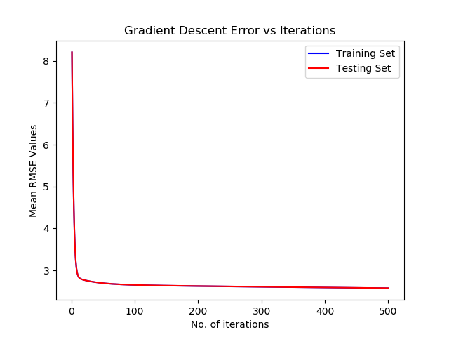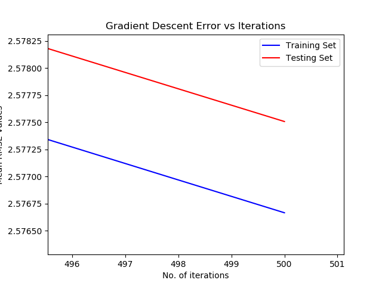Below is the RMSE values for each fold for Normal Equation for training and testing set. Alongside is given the mean RMSE values for Gradient Descent and Normal Equation on Train and Test set, clearly RMSE values for Normal Equation is lower than that of Gradient Descent.
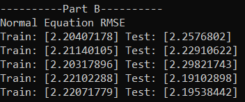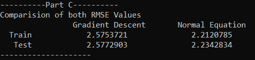 -
2. We calculated L1, Lasso Param: 0.00149 and L2, Ridge Param: 0.25829 as shown below. RMSE for test set with L1 regularisations came out to be 2.772578 and that for L2 regularisations was 2.7728123.
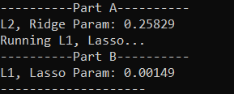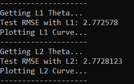Given below are the graphs for RMSE with L1 and L2 regularisations vs Iterations. clearly, training set performs better than test set for both L1 and L2 regularisations.
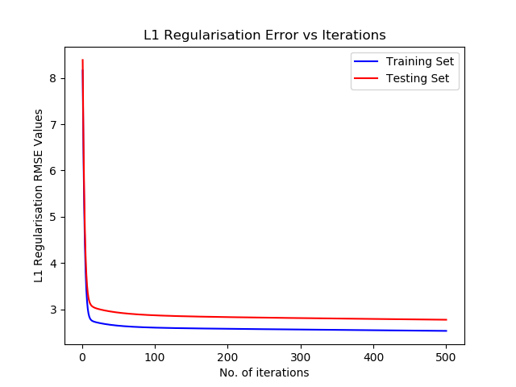 -
3. We calculated L1, Lasso Param: 2e-05 and L2, Ridge Param: 2e-05 as shown below. Also below are Scatter plots with Gradient Descent and L1 and L2. For Body Weight vs Brain Weight. Comparing the three we see they all coincide with each other hence for the given dataset the best fit line doesn't change much and perform almost the same.
 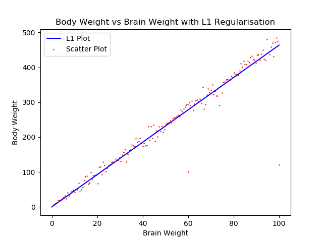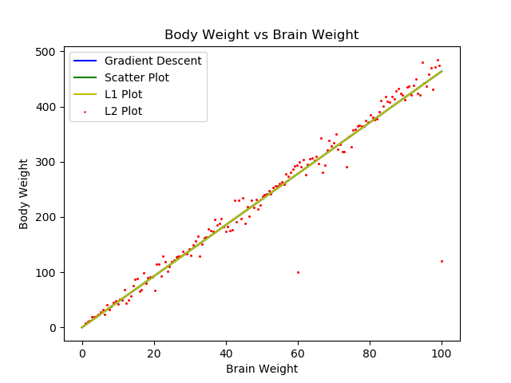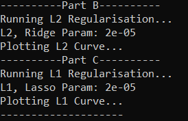
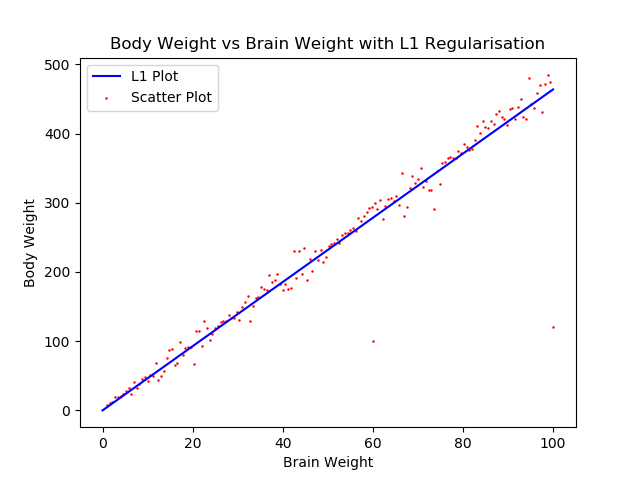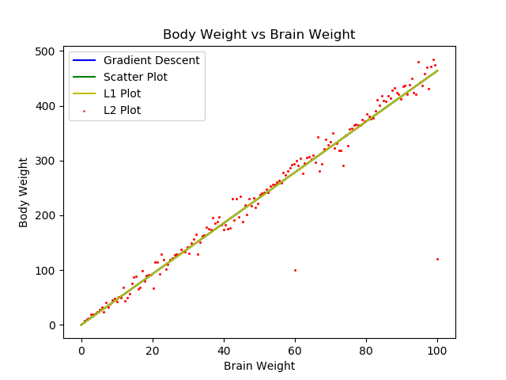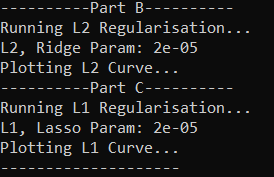 -
Quesiton 2
1. L2, Ridge Param: 0.52525 and L1, Lasso Param: 1e-05 gave plots for RMSE Error vs Iteration for L1 and L2 regularisations. As can be seen from graph alongside L1 performs better than L2 for the given dataset. Reason for which could be because there are many features, some of which don’t necessarily change the results and since L1 works well for feature reduction, L1 performs slightly better.
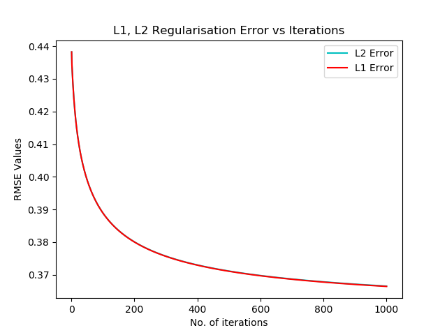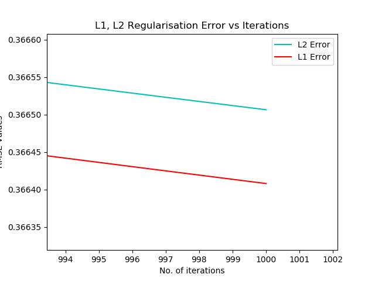Below are graph for Accuracy vs Iteration curves with L1 and L2 regularisations as clear again L1 is slightly better than L2. Also below is comparison of accuracy in %.
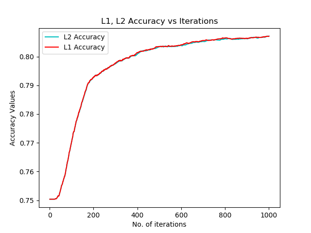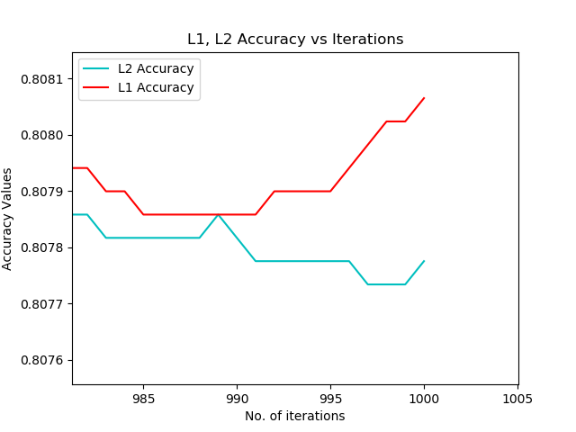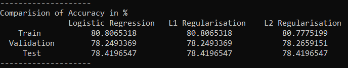2. Below is table of accuracy on test and train set for each of the classes for L1 and L2 regularisations. Alongside overall performance for the model. It's a good fit on the given dataset.
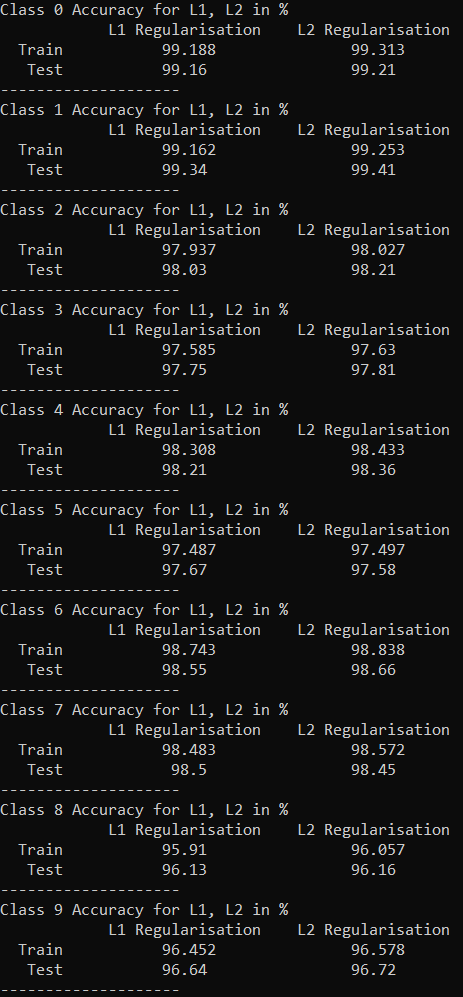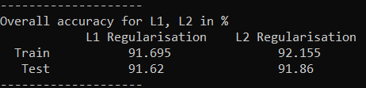3. Given below is ROC curve for each class using L2 regularisation.
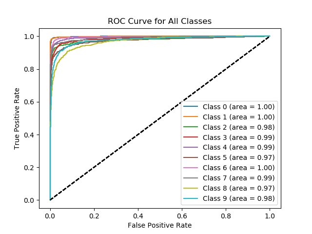 -
Quesiton 3, 4
Attached are solutions for the same.
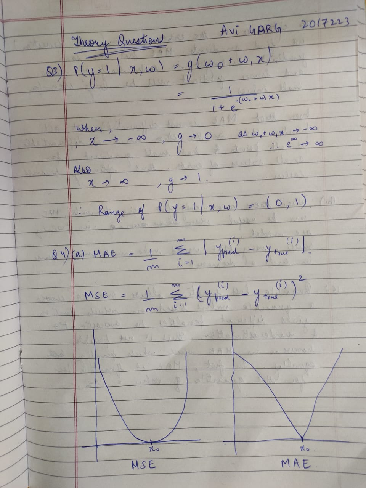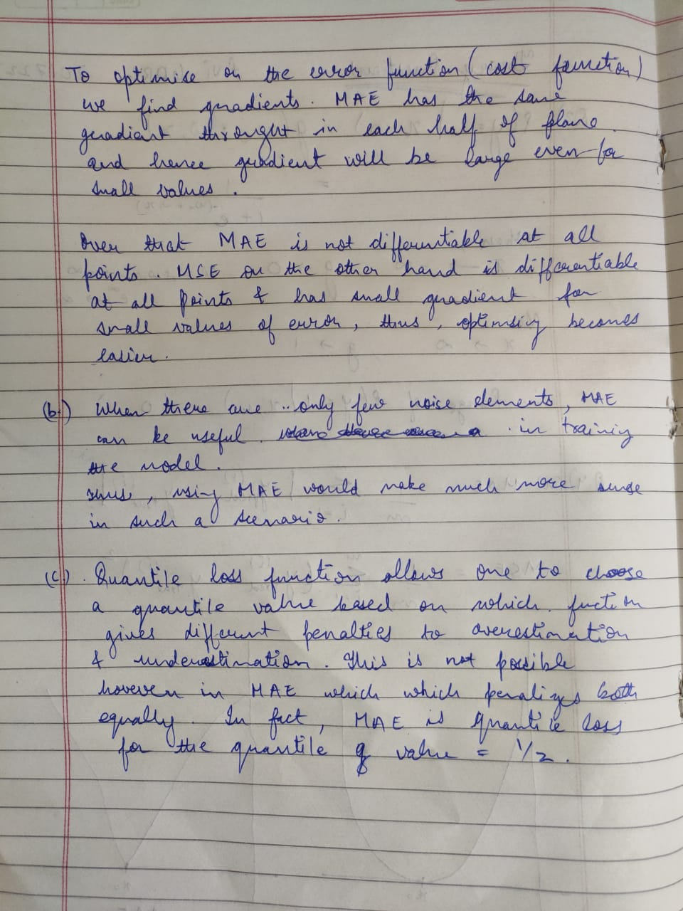